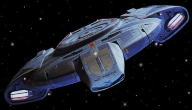
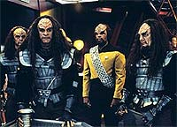
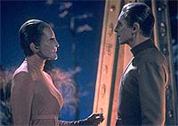

|
Uma
nova nave e um novo inimigo
 Chega
finalmente ao Brasil a terceira temporada (1994/1995) de Jornada
nas Estrelas: Deep Space Nine, pelo canal USA, dando
continuidade a uma das mais importantes sagas de fico cientfica
da televiso americana. A terceira temporada de DS9
normalmente lembrada como a temporada que introduziu a nave
estelar Defiant e estabeleceu o Dominion como a grande raa de
viles da srie. Entretanto, se olharmos com mais ateno,
teremos inmeros pontos a considerar. Chega
finalmente ao Brasil a terceira temporada (1994/1995) de Jornada
nas Estrelas: Deep Space Nine, pelo canal USA, dando
continuidade a uma das mais importantes sagas de fico cientfica
da televiso americana. A terceira temporada de DS9
normalmente lembrada como a temporada que introduziu a nave
estelar Defiant e estabeleceu o Dominion como a grande raa de
viles da srie. Entretanto, se olharmos com mais ateno,
teremos inmeros pontos a considerar.
Com o final de A Nova Gerao, DS9 foi a nica srie
de Jornada no ar entre setembro de 1994 e janeiro de 1995,
quando foi exibido o piloto de Voyager, "Caretaker".
Isso serve de pouco consolo, em virtude da imensa publicidade
envolvida na estria do filme "Generations" e da
rede UPN (tendo Voyager como seu carro-chefe). Da o estdio
passou a exercer uma forte presso sobre os produtores de DS9,
tanto direta (para a srie "carregar o basto" na TV
em geral --mesmo que brevemente-- e como srie fazendo sua
primeira exibio em syndication --isso de forma definitiva, j
que Voyager estaria fixada em uma rede) quanto indireta,
com a grande publicidade que os outros segmentos do franchise
estavam recebendo na poca.
O estdio apontou uma direo mais de ao e aventuras fora
da estao e menos histrias envolvendo Bajor. Obviamente os
executivos do estdio no se opuseram introduo da
Defiant. De fato, 5 entre os 5 primeiros (e 9 entre os 12
primeiros) episdios da temporada se passam em sua maior parte
fora da estao, cortesia dos servios da nova nave de DS9.
O aspecto Bajoriano da srie tambm foi reduzido, mas no de
forma to dramtica.
Esse quadro inicial aponta para uma certa descaracterizao da srie
e uma perda da sua identidade e unidade. Felizmente, com o tempo,
a Defiant passou a ser utilizada de uma forma mais transparente e
sem dar aquele "ar tradicional de Jornada" a srie.
De fato difcil imaginar a srie sem ela. Manter as histrias
Bajorianas na srie foi um tributo perseverana dos
produtores --o estdio sempre foi contra.

Alm de uma certa inconsistncia
no tom geral da srie, a prpria escrita dos episdios andou
dando as suas derrapadas. Trocas na equipe de roteiristas e a
indeciso de Piller de deixar ou no a srie tambm tiveram o
seu impacto na qualidade dos roteiros da temporada, bem como num
considervel aumento do nvel de "tecnobaboseira" dos
episdios.
A terceira temorada tem um episdio "vencedor" a menos
do que a segunda temporada (15 contra 16), porm existe uma
melhor distribuio do material que evita as grandes
"valas" de qualidade daquela temporada (o estilo aqui
o de uma "enlouquecida montanha-russa" mesmo). Apesar de
tambm no termos uma grande seqncia de
"vencedores" como a dos oito ltimos episdios da
temporada anterior.
Para introduzir essa nova temporada, seguimos agora com uma breve
descrio do conflito (sem entrar em maiores detalhes) entre a
Federao e o Dominion ao longo da srie, os principais
destaques entre os personagens e os detalhes por trs das cmeras
que levaram a produo desta temporada.
Temos em seguida uma descrio episdio a episdio da
temporada (com direito a algumas curiosidades sobre os segmentos).
O que promete o arco de histria envolvendo o Dominion?
Esta nova temporada posiciona o Dominion como a raa antagnica
principal da srie. Em particular foi tomado um certo cuidado em
deixar Sisko e cia. sempre atrs em qualquer aspecto do conflito
neste incio, uma situao que foi se modificando muito
lentamente ao longo das temporadas (afinal do que adianta
introduzir um "super-inimigo" em um episdio se j no
episdio seguinte "nossos heris" conseguem dar cabo
dele com um punhado de tecnobaboseira?).
Desde o ltimo episdio da segunda temporada, todas as
subsequentes iniciaram e terminaram com enfoque na superpotncia
do quadrante Gama. Nas temporadas 3, 4 e 5 tomamos conhecimento do
lado extremamente manipulativo do Dominion, medida que ele ia
colocando as potncias do quadrante Alfa umas contra as outras e
assinando tratados e pactos de no-agresso mtua quando e com
quem fosse conveniente.
 Um
timo exemplo de continuidade em DS9 o seguinte: Em "The
Die is Cast", um Fundador (se passando por um Romulano)
diz a Odo e Garak que (aps os eventos daquele episdio) as nicas
reais ameaas restantes ao Dominion no quadrante Alfa seriam a
Federao e o Imprio Klingon, e mesmo essas no o seriam por
muito tempo. Mais frente, atravs de Fundadores infiltrados,
que semeiam desinformao e parania, o Dominion consegue levar
os Imprios Klingon e Cardassiano a um conflito e colocar a
Federao no meio dele, como visto em "The Way of the
Warrior" (que abre a quarta temporada e est disponvel
em vdeo no Brasil j faz algum tempo) e melhor explicado no
comeo da quinta temporada, em "Apocalypse Rising".
Em meados da quinta temporada, no duplo "In Purgatory's
Shadow" & "By Inferno's Light", uma
enfraquecida Cardssia acaba fazendo uma aliana com o Dominion,
dando aos Fundadores uma base de operaes em pleno quadrante
Alfa. A guerra entre o Dominion e a Federao s comea
realmente no ltimo episdio da quinta temporada, "Call
To Arms", e continua durante as duas ltimas temporadas
inteiras.
O arco envolvendo o Dominion descreve um conflito que iria
redesenhar o mapa do quadrante Alfa inteiro e uni-lo, como nunca
antes, contra o maior inimigo da sua histria. Se voc leitor,
quiser realmente saber o papel que os federados, os Klingons, os
Romulanos, o Dominion (Fundadores, Vortas e Jem'Hadars), os
Cardassianos, os Breen (aguardem), os Maquis, a Seo 31
(aguardem), os Bajorianos, os Profetas, e os Pagh-Wraiths
(aguardem) desempenham em tal conflito, voc no pode perder
tempo e comear a assistir a um episdio atrs do outro, sem
perder nenhum (o que, convenhamos, no difcil, com mltiplas
reprises semanais). Ainda faltam 130 episdios inditos,
contendo alguns dos mais premiados e bem produzidos segmentos da
fico televisiva americana de todos os tempos, de uma saga que
vai deixar saudades (tenho certeza) em muitos de vocs.
Os destaques, dentre os personagens nesta temporada, vo para Odo
(que o estdio apontou como o personagem mais popular e sobre o
qual os fs gostariam de saber mais a respeito) e Sisko.
 Odo
ganha com a descoberta de que a sua raa exatamente a dos
Fundadores do Dominion. E o nosso comissrio tem que lidar com a
primeira parte do seu dilema pessoal, fazer parte de uma raa
responsvel por incomensurvel destruio e morte (situao
pessoal que s piora ao longo da srie, com a guerra entre a
Federao e o Dominion). A segunda parte, e ainda mais delicada,
vem de encontro ao fato de que, apesar de tudo que o Dominion
representa, ele ainda assim retornaria para o seu povo se no
fosse por seu amor por Kira. Odo tem que lidar com tudo isso at
o ltimo episdio da srie.
Ben Sisko tambm recebe inmeros desenvolvimentos interessantes,
nesta que a "temporada da virada" para o personagem.
Falaremos mais disso adiante.
Mudanas atrs das cmeras
Os roteiristas Peter Allan Fields (o melhor da srie nas duas
temporadas iniciais) e James Crocker so substitudos por Ronald
D. Moore (hoje em dia em "Roswell") e Ren Echevarria
(hoje em dia em "Dark Angel", aps uma passagem pela tima,
porm cancelada em sua primeira temporada, "Now and
Again"), vindos de A Nova Gerao.
O cinegrafista Jonathan West (hoje em dia em "C.S.I")
substitui Marvin H. Rush, que estava de sada para Voyager
(e hoje trabalha em Enterprise). West passou a utilizar um
diferente tipo de lente que permite ver com mais detalhe o
"fundo" de cada tomada.
A terceira temporada marca tambm a sada do co-criador Michael
Piller (hoje em dia preparando a estria de sua nova srie,
"The Dead Zone") das suas funes como
produtor-executivo, passando a atuar apenas como consultor (o que
curiosamente ocorreu durante a produo do duplo "Improbable
Cause" & "The Die is Cast"). Com
isso, Ira Steven Behr (o real mentor da srie, hoje em dia
preparando um novo projeto, aps o fracasso da comdia "Bob
Patterson") recebeu "carta branca" para liberar
todo o potencial de DS9, daquele momento em diante.
A TEMPORADA, EPISDIO A
EPISDIO
01 - The Search, Part I -- Com a chegada da Defiant estao,
Sisko e Cia. partem em uma misso ao quadrante Gama para contatar
os Fundadores do Dominion, o que acaba levando a um eletrizante
encontro com os Jem'Hadars, do qual escapam apenas Odo e Kira. Os
dois acabam descobrindo, em uma cena final de cair o queixo, o
planeta habitado pela raa de Odo. A partir deste episdio, Ben
Sisko passa a considerar verdadeiramente a estao como o seu
lar.
02 - The Search, Part II -- Enquanto Odo tenta achar as
suas "razes familiares", no planeta errante dos
Fundadores no quadrante Gama, Sisko e cia. presenciam negociaes
(feitas a toque de caixa) entre a Federao e o Dominion que
literalmente entregam o sistema Bajoriano de bandeja potncia
do quadrante Gama. O final muito mais decepcionante que
surpreendente, pondo por terra boa parte do que veio antes. Ainda
assim o episdio permanece como uma eficiente plataforma de lanamento
para futuras histrias envolvendo Odo e, claro, o Dominion.
03 - The House of Quark -- Quark mata por acidente um
Klingon bbado e herda a "casa" do Klingon e a sua
esposa (de nome Grilka). Aps ajudar a Klingon a resolver uma
disputa com uma "casa" rival, Quark recebe o "divrcio"
e os dois permanecem amigos. O episdio de fato engraado e
consegue fazer a interao entre Klingons e Ferengis sem ferir
as duas culturas. Participao de Gowron, Chanceler do Imprio
Klingon.
04 - Equilibrium -- Um desequilbrio entre o hospedeiro e
simbionte coloca Jadzia a beira da morte. Alucinaes da Trill
apontam para memrias suprimidas de um outro hospedeiro (at ento
desconhecido) e para um segredo guardado a "sete chaves"
da populao Trill. No teaser deste episdio, Ben Sisko cozinha
(uma tradio familiar) para toda a sua tripulao. O mundo
natal Trill visitado pela primeira e nica vez neste episdio.
05 - Second Skin -- Kira raptada pela Ordem Obsidiana (o
servio secreto Cardassiano) e acorda com as feies de uma
Cardassiana. A Ordem quer convencer Kira que de fato ela uma
agente Cardassiana que sofreu uma profunda transformao fsica
e lavagem cerebral para trabalhar em Bajor nos tempos da ocupao.
Kira fica na casa do pai de tal agente, um importante Cardassiano
de nome Ghemor. Um episdio que poderia ter facilmente degenerado
em um total fracasso, deve grande parte do seu sucesso as atuaes
sinceras de Nana Visitor e Lawrence Pressman como o Legado Ghemor.
06 - The Abandoned -- Odo encontra um beb Jem'Hadar em
uns destroos comprados por Quark. Rapidamente o beb cresce e
quer dar vazo sua natureza guerreira. Odo decide tentar
ensinar o Jem'Hadar a lidar com seus instintos como uma maneira
dele prprio lidar com o fato de ser um dos Fundadores do
Dominion. Bastante bem intencionado e relevante, porm muito ingnuo
e no to competente em sua execuo.
07 - Civil Defense -- Um antigo programa do computador da
estao, dos tempos da ocupao, reativado por engano,
confundindo a nova tripulao com trabalhadores Bajorianos em
fuga. Um radiante Dukat chega estao, querendo "mundos
e fundos" para liberar o computador. A o feitio vira
contra o feiticeiro e o computador acaba por considerar Dukat um
traidor. Da todos tm de se juntar para resolver o problema.
Ainda que o fechamento no seja nenhuma maravilha, diverso
garantida a maior parte do tempo, com o bnus de esmiuar mais a
rivalidade entre Dukat e Garak.
08 - Meridian -- um dos piores momentos da srie. Nele
Sisko e cia. encontram um planeta que vai e volta de nosso
Universo, permanecendo um breve espao de tempo aqui e uma
literal eternidade em "outro lugar". Dax (no curso de
uma hora de televiso) se apaixona perdidamente por um nativo,
decide jogar tudo pro alto (inclusive a sagrada vida do seu
simbionte) e arruma um meio de voltar com o seu amado e o seu
planeta para este "tal lugar". Obviamente o plano falha
e Dax termina o episdio inconsolvel, para no lembrar de nada
no resto da srie. Perfeito!
09 - Defiant -- O tenente Thomas Riker (uma duplicata exata
do primeiro oficial da Enterprise que foi criada por um bizarro
acidente de transporte em "Second Chances", da sexta
temporada de A Nova Gerao), se passando pelo comandante
William Riker, rouba a Defiant como parte de uma misso dos
Maquis. Sisko e Dukat devem novamente se unir, para evitar que tal
misso acabe levando a uma guerra entre os seus dois governos.
10 - Fascination -- tambm um dos piores episdios da
srie, um verdadeiro (e tristemente realizado) "DS9
apresenta: Sonhos de uma noite de vero". A embaixadora
Lwaxana "Queima tubo de imagem" Troi (interpretada por
Majel "Quem foi que deu autorizao pra esta mulher
trabalhar como atriz?" Barrett) visita a estao, para
estar com Odo durante o festival de gratido Bajoriano. Ela comea
a ter problemas com suas habilidades telepticas, fazendo todos
os personagens ficarem apaixonados por algum. O resto vocs
podem imaginar. Uma amostra: imaginem um Bareil, no cio, tentando
agarrar Dax e agredir Sisko (por quem a Trill fica apaixonada) e
acabar sendo nocauteado por Jadzia. Perfeito ao quadrado!
11 - Past Tense, Parts I & II -- A caminho de uma reunio
no comando da Frota Estelar na Terra, Sisko, Bashir e Dax sofrem
um acidente de transporte que os coloca na So Francisco de 2024,
em um dos perodos mais negros da histria dos Estados Unidos e
da Terra. Nesta poca, doentes, desempregados e sem-teto so
(literalmente) amontoados pelo governo em verdadeiros campos de
concentrao urbanos e sujeitos a condies desumanas. Sisko e
Bashir vo parar em um destes "santurios", poucos
dias antes de uma rebelio dos "detentos" que tomaram a
administrao e fizeram os funcionrios de refns. Tal situao
terminou em tragdia quando a Guarda Nacional invadiu o local,
com a perda de centenas de vidas. Entretanto as aes de um
"detento", Gabriel Bell, que no permitiu a morte de
nenhum dos refns, sensibilizaram o pas e o mundo, levando ao
banimento dos "santurios" e a uma total reforma
social. Entretanto, em uma reviravolta do destino, Bell acaba
sendo morto e Sisko decide tomar o seu lugar, apesar de os
registros histricos indicarem que Bell no sobrevive ao
confronto. Talvez o mais direto e cru dos episdios de Jornada
com relao a questes sociais e o ponto alto de Ben Sisko at
aquele ponto na srie.
13 - Life Support -- Um acidente em uma nave auxiliar fere
mortalmente o vedek Bareil poucos dias antes da assinatura de um
importante tratado entre os Bajorianos e os Cardassianos, ato que
pode no se oficializar sem a participao efetiva de Bareil. O
doutor Bashir realiza um virtual milagre que permite a sobrevida
do lder religiosa, porm com inmeras seqelas.
14 - Heart of Stone -- Enquanto procurando por um membro
dos Maquis em um planeta ermo, Kira se v aprisionada em uma
estrutura cristalina que ameaa envolv-la por completo e lev-la
a morte. Odo tem que achar um meio de libertar a major antes que
seja tarde demais. Neste episdio tambm o Ferengi Nog (sobrinho
de Quark e filho de Rom) decide ser o primeiro de sua espcie a
entrar na Academia da Frota Estelar.
15 - Destiny -- Nas vsperas da primeira misso cientfica
conjunta Bajoriana-Cardassiana, um vedek procura Sisko e conta
sobre uma antiga profecia que, segundo a interpretao dele,
aponta para a possvel destruio da Fenda Espacial (o
"Templo Celestial" segundo os Bajorianos) no curso de
tal misso. Inicialmente ctico Sisko acaba tendo que refletir
sobre a sua condio de Emissrio dos Profetas, medida que
mais e mais evidncias apontam para a realizao de tal
profecia. Com um final absolutamente perfeito, que coloca Sisko
mais prximo de aceitar o seu papel na religio Bajoriana, o
episdio levanta interessantes questes filosficas e as trata
com grande inteligncia. Participao de Tracy Scoggins, a
capito Lockley de "Babylon 5", como uma Cardassiana.
16 - Prophet Motive -- O Grande Nagus Zek tem uma experincia
com os Profetas, que o transformam em um ser mais esclarecido.
Este novo Zek est decidido a reformar toda a sociedade Ferengi,
transformando-a em uma mais generosa e bondosa. Quark fica
horrorizado e acaba por convencer os Profetas a desfazer o
ocorrido com o Grande Nagus e as cpias das Regras de Aquisio
rescritas por Zek so todas destrudas. Apesar de no chegar a
ponto de classificar o encontro dos Ferengis com os Profetas como
"hertico", o episdio no faz nada por mim, muito
ruim mesmo. A obviedade a "fora motriz" do episdio
e apesar do confronto final entre Quark e os Profetas acabar tendo
os seus mritos (por mais incrvel que possa parecer), no
consegue redimir tudo que veio antes.
17 - Visionary -- Nenhuma temporada de DS9 seria
completa sem um episdio do tipo "vamos torturar
O'Brien", uma das marcas registradas da srie. Nesta clara e
bem escrita histria envolvendo paradoxos temporais, O'Brien
visita, ao longo do episdio, por breves perodos de tempo,
diferentes possveis realidades algumas horas no futuro,
vislumbrando acontecimentos que ajudam a resolver uma complexa
situao de tenso poltica envolvendo Klingons, Romulanos e a
destruio de DS9.
18 - Distant Voices -- Bashir sofre um ataque teleptico e
entra em coma em uma situao terminal. O nico modo de se
salvar confrontar a si prprio nos confins de sua mente
utilizando diferentes facetas de sua personalidade, as quais tomam
a forma de seus colegas de tripulao. Somente a excelente atuao
de Siddig El Fadil como Bashir se salva deste episdio, que
parece tentar redefinir o termo "falta de sutileza".
Episdio ganhador do prmio Emmy de maquiagem.
19 - Through the Looking Glass -- Sisko tem de tomar o
lugar da sua falecida contraparte do "universo do
Espelho" para tentar convencer a Jennifer Sisko daquele
universo (que tambm esposa de sua falecida contraparte e uma
cientista conceituada) a se unir aos rebeldes. No caminho ele tem
de demonstrar um grande jogo de cintura e "oferecer servios
de alcova" s contrapartes de Jadzia e Kira. Participao
especial de Tim Russ como o Mirror-Tuvok.
20 - Improbable Cause & The Die is Cast -- Este
episdio em duas partes o ponto alto da temporada e
provavelmente o melhor episdio duplo da histria de Jornada
nas Estrelas. Uma investigao de Odo sobre um atentado
contra a vida de Garak acaba por revelar uma verdadeira teia de
intriga poltica, que acaba conduzindo (atravs de uma sucesso
de fascinantes desdobramentos) o comissrio e o
"alfaiate" a bordo de uma Frota conjunta dos servios
secretos de Romulus e Cardssia, sob o comando do antigo mentor
de Garak, Enabran Tain. Sua misso, destruir o planeta natal dos
Fundadores do Dominion no quadrante Gama. Baseado em uma trama
incrivelmente sofisticada (que utiliza elementos introduzidos
desde pelo menos "The Wire" da segunda temporada), com
direito a excepcionais dilogos e uma caracterizao muita mais
complexa do que aquela normalmente encontrada em Jornada. O episdio
uma verdadeira obra-prima. Como "bnus", o episdio
apresenta o primeiro combate entre Frotas de naves da histria de
Jornada; mostra Sisko desobedecendo a uma ordem direta e
mostrando a melhor forma da Defiant em combate e transforma o
Dominion em um inimigo absolutamente formidvel. Entretanto o que
fica ao final do segmento, como sempre o objetivo nesta srie,
o drama dos seus personagens, aqui representado pela solido
(um dos maiores males de nossa era) compartilhada entre Odo e
Garak. "Improbable Cause" foi indicado ao prmio de
penteados.
(Em tempo: este episdio duplo to importante para a saga de DS9
quanto o episdio "The Coming Of Shadows" o para
a saga de "Babylon 5").
22 - Explorers -- Sisko constri uma rplica de uma
antiga "nave solar" Bajoriana com o intuito de provar
que os Bajorianos conseguiram chegar a Cardssia, 800 anos atrs.
Levando Jake na aventura, o episdio se mostra um substantivo
vencedor por mostrar de forma efetiva a relao entre pai e
filho e apresentar inmeros elementos que teriam desenvolvimentos
futuros (tais como o futuro de Jake como escritor e o
relacionamento de Sisko com a capito Yates). Em uma trama secundria,
O'Brien e Bashir terminam bbados e cantando o clssico
"Jerusalem" em uma cena absolutamente antolgica. O
episdio recebeu o prmio "Melhor viso do futuro" de
1995 da "Space Frontier Foundation".
23 - Family Business -- Quark levado ao planeta natal
dos Ferengis (que aparece pela primeira vez em Jornada)
para responder a acusaes feitas contra sua me, tais como
obter lucros e usar roupas, ambas proibidas pelas leis Ferengis.
Aps muita confuso e para ficar de bem com o "Leo"
Ferengi, Ishka acaba confessando os seus "crimes" e
devolvendo os seus lucros (porm Quark no sabe que ela devolveu
apenas parte deles). Mais um pssimo episdio que no sabe se
uma comdia ou um drama familiar leve (falar da interao
entre irmos e entre me e filhos) e termina por no ser nenhum
dos dois, uma perda de filme. Neste episdio Ben Sisko conhece a
sua futura esposa, a capit Yates.
24 - Shakaar -- A pedido de Kai Winn (recm-nomeada lder
do governo provisrio em virtude da morte do lder anterior),
Kira tem que retornar sua provncia natal em Bajor e convencer
os seus antigos companheiros (dos tempos da resistncia
Bajoriana) a devolver equipamento agrcola do governo para que
este possa ser colocado para uso comunitrio. A intransigncia
de Winn aponta para uma guerra civil em Bajor.
25 - Facets -- Jadzia realiza o seu Zhian'tara, um ritual
Trill que permite que ela possa interagir com os hospedeiros
anteriores (do simbionte Dax), revividos nos corpos de seus vrios
amigos. Uma boa idia prejudicada pela falta de foco no incio,
alguns bvios furos e uma fatal falha na atuao de Terry
Farrell como Jadzia Dax. O destaque fica para Ren Auberjonois
como um surpreendente "Odo-Curzon".
26 - The Adversary -- Sisko promovido a capito e
durante a cerimnia procurado por um embaixador da Federao
que comunica que ele deve partir imediatamente em misso para
investigar um possvel golpe de Estado no governo de uma raa no-aliada
com a qual a Federao j guerreou no passado. Entretanto tudo
no passa de uma manobra do Dominion para provocar uma nova
guerra entre a Federao e os Tzenkethi, usando a Defiant como
seu instrumento.
Luiz
Castanheira editor do Trek
Brasilis
|